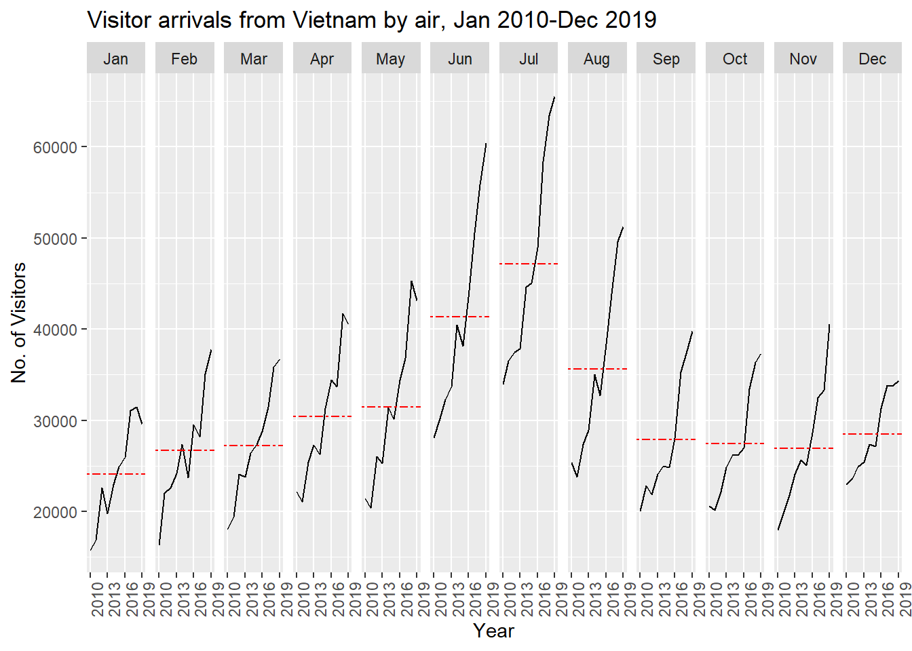
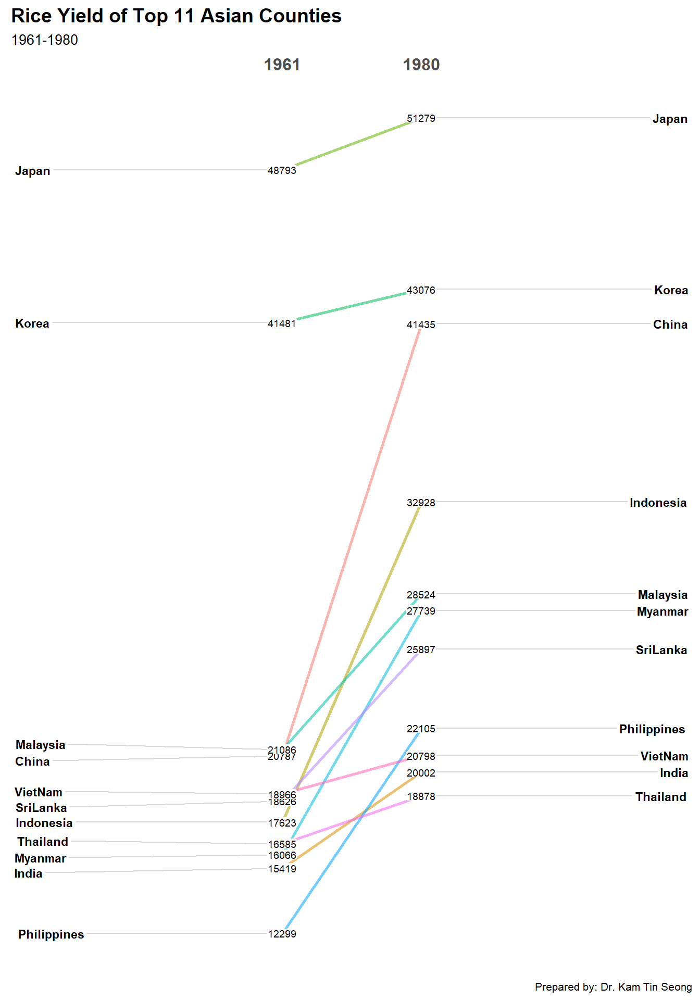

19 Visualise And Analyse Time-Oriented Data
Hands-On Exercise for Week 7
(First Published: Jul 5, 2023)
19.1 Learning Outcome
We will learn how to create the following visualisations:
plotting a calender heatmap,
plotting a cycle plot,
plotting a slopegraph, and
plotting a horizon chart
19.2 Getting Started
19.2.1 Install and load the required R libraries
Install and load the the required R packages. The name and function of the new packages that will be used for this exercise are as follow
- scales : provides various functions for scaling and formatting data
- viridis : provides color palettes that are perceptually uniform and work well for representing data in visualisations
- gridExtra : provides functions for arranging multiple plots on a page or within a plot
- readxl :enables reading data from Microsoft Excel files (.xls and .xlsx) into R
- knitr :used for dynamic report generation in R
- data.table :offers fast data manipulation and aggregation operations, making it useful for working with large datasets
- CGPfuntions : contains a function that is designed to automate the process of producing a Tufte style slopegraph using
ggplot2.
19.3 Plotting Calendar Heatmap
In this section, we will learn how to plot a calender heatmap programmetically by using ggplot2 package.
19.3.1 Import the data
eventlog.csv file consists of 199,999 rows of time-series cyber attack records by a country. It is imported in R and assigned to the attacks data frame.
19.3.2 Examine the data structure
kable() can be used to review the structure of the imported data frame.
| timestamp | source_country | tz |
|---|---|---|
| 2015-03-12 15:59:16 | CN | Asia/Shanghai |
| 2015-03-12 16:00:48 | FR | Europe/Paris |
| 2015-03-12 16:02:26 | CN | Asia/Shanghai |
| 2015-03-12 16:02:38 | US | America/Chicago |
| 2015-03-12 16:03:22 | CN | Asia/Shanghai |
| 2015-03-12 16:03:45 | CN | Asia/Shanghai |
There are three columns, namely timestamp, source_country and tz.
timestamp field stores date-time values in POSIXct format.
source_country field stores the source of the attack. It is in ISO 3166-1 alpha-2 country code.
tz field stores time zone of the source IP address.
19.3.3 Data Preparation
Step 1: Deriving weekday and hour of day fields
Before we can plot the calender heatmap, two new fields namely wkday and hour need to be derived. In this step, we will write a function to perform the task.
weekdays()is a base R function.
Step 2: Deriving the attacks tibble data frame
Show the code
Beside extracting the necessary data into attacks data frame, mutate() of dplyr package is used to convert wkday and hour fields into factor so they’ll be ordered when plotting.
The table below shows the tidy tibble table after processing.
19.3.4 Building a Calendar Heatmap
Show the code
grouped <- attacks %>%
count(wkday, hour) %>%
ungroup() %>%
na.omit()
ggplot(grouped,
aes(hour,
wkday,
fill = n)) +
geom_tile(color = "white",
size = 0.1) +
theme_tufte(base_family = "Helvetica") +
coord_equal() +
scale_fill_gradient(name = "# of attacks",
low = "sky blue",
high = "dark blue") +
labs(x = NULL,
y = NULL,
title = "Attacks by weekday and time of day") +
theme(axis.ticks = element_blank(),
plot.title = element_text(hjust = 0.5),
legend.title = element_text(size = 8),
legend.text = element_text(size = 6) )
a tibble data table called grouped is derived by aggregating the attack by wkday and hour fields.
a new field called n is derived by using
group_by()andcount()functions.na.omit()is used to exclude missing value.geom_tile()is used to plot tiles (grids) at each x and y position.colorandsizearguments are used to specify the border color and line size of the tiles.theme_tufte()of ggthemes package is used to remove unnecessary chart junk. To learn which visual components of default ggplot2 have been excluded, you are encouraged to comment out this line to examine the default plot.coord_equal()is used to ensure the plot will have an aspect ratio of 1:1.scale_fill_gradient()function is used to creates a two colour gradient (low-high).
19.3.5 Building Multiple Calendar Heatmaps
Step 1: Deriving attack by country object
In order to identify the top 4 countries with the highest number of attacks, we can do the followings:
count the number of attacks by country,
calculate the percent of attackes by country, and
save the results in a tibble data frame.
Step 2: Preparing the tidy data frame
In this step, we extract the attack records of the top 4 countries from attacks data frame and save the data in a new tibble data frame (i.e. top4_attacks).
Step 3: Plotting the Multiple Calender Heatmap by using ggplot2 package.
Show the code
ggplot(top4_attacks,
aes(hour,
wkday,
fill = n)) +
geom_tile(color = "white",
size = 0.1) +
theme_tufte(base_family = "Helvetica") +
coord_equal() +
scale_fill_gradient(name = "# of attacks",
low = "sky blue",
high = "dark blue") +
facet_wrap(~source_country, ncol = 2) +
labs(x = NULL, y = NULL,
title = "Attacks on top 4 countries by weekday and time of day") +
theme(axis.ticks = element_blank(),
axis.text.x = element_text(size = 7),
plot.title = element_text(hjust = 0.5),
legend.title = element_text(size = 8),
legend.text = element_text(size = 6) )
19.4 Plotting Cycle Plot
19.4.1 Import the data
The codes below import arrivals_by_air.xlsx by using read_excel() of readxl package and save it as a tibble data frame called air.
19.4.2 Data Preparation
Next, two new fields called month and year are derived from Month-Year field.
Then, we extract the data for the target country (i.e. Vietnam)
Thereafter, we compute year average arrivals by month.
19.4.3 Generating the Cycle Plot
Show the code
# Plot the graph
ggplot() +
geom_line(data=Vietnam,
aes(x=factor(year), # Set year to factor to ensure that x-axis label is formatted as 4-digit year
y=`Vietnam`,
group=month),
colour="black") +
geom_hline(aes(yintercept=avg_value),
data=hline.data,
linetype=6,
colour="red",
size=0.5) +
facet_grid(~month) +
labs(axis.text.x = element_text(angle = 90, hjust = 1),
title = "Visitor arrivals from Vietnam by air, Jan 2010-Dec 2019") +
xlab("Year") +
ylab("No. of Visitors")+
# Added to rotate the x-axis labels 90 degrees clockwise so that they don't overlap
theme(axis.text.x = element_text(angle = 90, hjust = 1)) +
# Added this line to display year label every 3 years on the x-axis to reduce clutter and overlapping of the year
scale_x_discrete(breaks = function(x) x[seq(1, length(x), 3)])
19.5 Plotting a Slopegraph
Before getting start, make sure that CGPfunctions has been installed and loaded onto R environment. Then, refer to Using newggslopegraph to learn more about the function. Lastly, read more about newggslopegraph() and its arguments by referring to this link.
19.5.1 Import the data
19.5.2 Generate the Slopegraph
Show the code

For effective data visualisation design, factor() is used convert the value type of Year field from numeric to factor.
\(**That's\) \(all\) \(folks!**\)